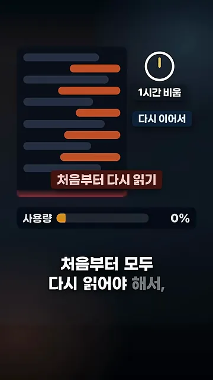
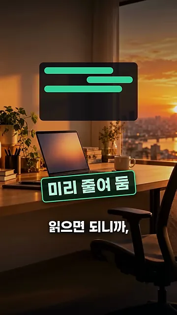
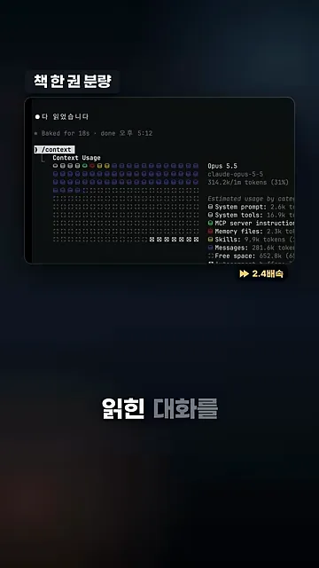
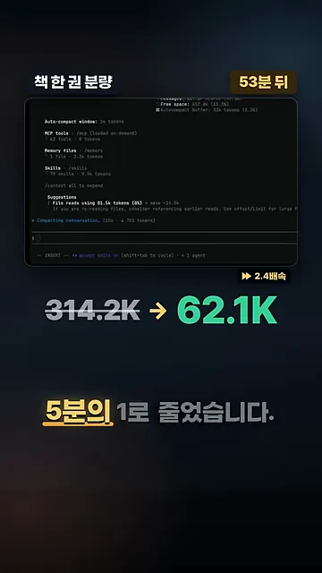
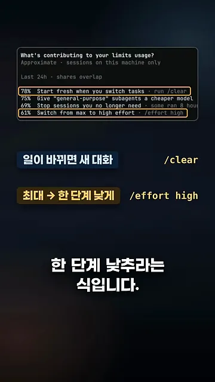
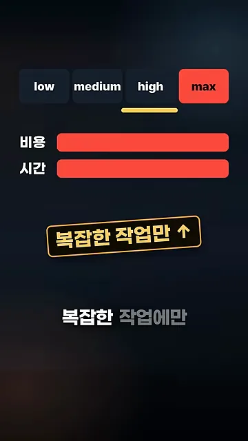

첫째, 쉬는 동안 자동 정리
사용량 한도에 걸리는 흔한 이유 하나는 '쉬었다가 이어서 시키기'예요. 긴 작업 중에 한 시간쯤 자리를 비웠다가 다시 말을 걸면, 클로드는 그동안 나눈 대화를 처음부터 다시 읽어야 해요. 그 한 번의 요청이 생각보다 무거워져요.
아래 화면이 그 상황이에요. 1시간 비운 뒤 '다시 이어서'를 누르면 주황색 줄 전체를 '처음부터 다시 읽기'로 표시하고, 사용량 막대가 차오르기 시작해요.

2.1.299부터는 자리를 비운 사이 클로드 코드가 대화를 먼저 줄여 둬요. 돌아와서 이어 시키면 줄어든 대화만 읽으면 되니 사용량이 훨씬 덜 들어요. 화면에서 대화 줄이 초록색 짧은 줄 세 개로 바뀐 게 '미리 줄여 둠'이에요.

맥북에서 직접 확인한 결과
발표자는 책 한 권 분량을 읽힌 대화를 만들고 /context로 크기를 확인했어요. 화면 오른쪽에 314.2k 토큰이라고 나와요. 이 대화를 그대로 두었어요.

53분 뒤 대화가 저절로 정리됐어요. 터미널 아래쪽에 정리 중이라는 줄이 보이고, 크기는 62.1K 토큰이 됐어요. 약 5분의 1이에요. 발표자는 요즘 작업 중간에 대화 정리를 오래 기다리는 일이 줄어든 이유도 이것 같다고 해요.

둘째, /usage가 아끼는 방법을 짚어 줘요
두 번째 기능은 /usage 화면이에요. 'What's contributing to your limits usage?' 항목이 이 기기에서 최근 24시간 동안 사용량을 키운 원인을 비율과 함께 보여 주고, 줄 끝에 해결 명령을 붙여 줘요.
아래 화면에서 노란 테두리를 친 두 줄이 영상이 고른 제안이에요. 위쪽 78%는 일이 바뀌면 새로 시작하라는 run /clear, 아래쪽 61%는 max 대신 high로 내리라는 /effort high예요. 그사이 75%와 69% 줄은 서브에이전트에 더 싼 모델을 주라는 제안과 안 쓰는 세션을 끄라는 제안이에요.

| 제안 | 명령 | 왜 아껴지나요 |
|---|---|---|
| 일이 바뀌면 새 대화로 시작 | /clear | 지난 대화를 매번 다시 읽지 않아도 돼요 |
| 추론 레벨을 max에서 한 단계 낮추기 | /effort high | 생각하는 양이 줄어서 그만큼 덜 써요 |
추론 레벨은 작업에 맞춰 골라요
발표자는 추론 레벨을 늘 최대로 두는 습관을 경계해요. 아래 화면처럼 max를 고르면 비용과 시간 막대가 둘 다 꽉 차요. 그래서 최대 레벨은 복잡한 작업에만 올리라고 해요.

간단한 작업은 오히려 low가 나아요. 답이 빨리 오고 작업도 빨라지며 사용량도 줄어요. 발표자 자신도 low를 자주 쓴다고 해요.
간단한 작업은 오히려 로우로 두면 답도 빨리 받고 작업도 빨라지고 사용량도 줄어서 저는 로우도 자주 씁니다.
— 영상 01:07